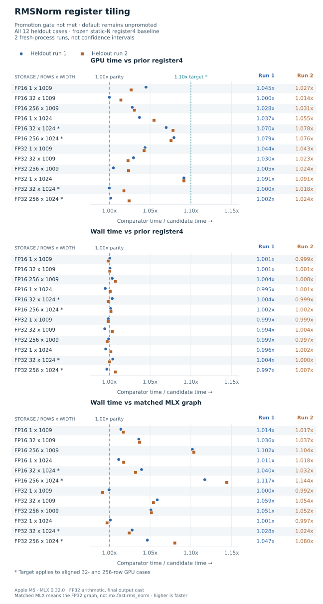
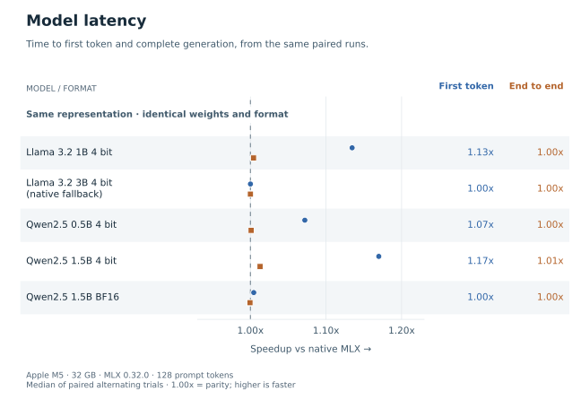
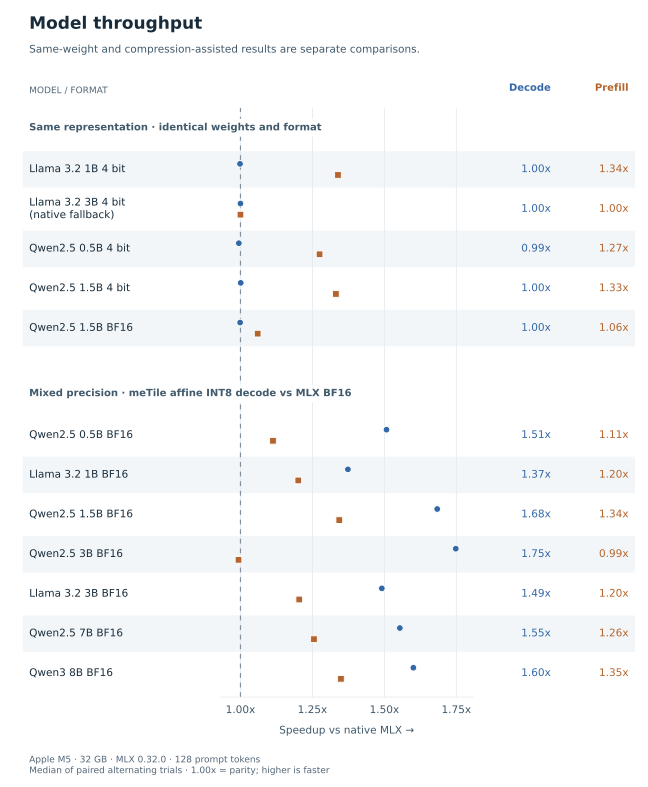
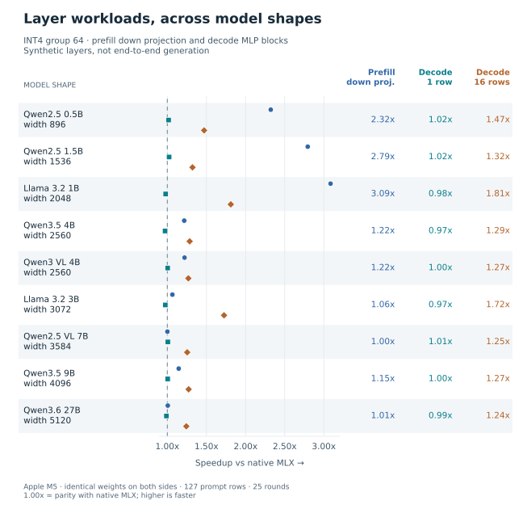
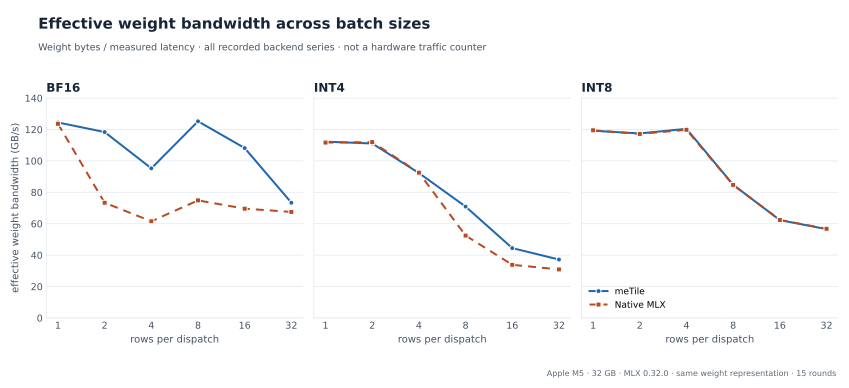

Benchmarks¶
The recorded results show useful gains on some Apple M5 workloads and near parity or losses on others. Read each ratio with its baseline, arithmetic policy and timing boundary. A faster GPU kernel does not necessarily reduce synchronized application latency, and compressing BF16 weights to INT8 changes the comparison.
The charts below are rendered from the repository’s JSON artifacts. Rendering does not execute a GPU workload or replace the recorded measurements. The MLX model and shape studies date from July 2026; the compiler studies date from October 2, 2026. They are separate experiments, not a single cumulative score. Open any chart for its full-size SVG; raw JSON downloads follow each study.
Find the benchmark code¶
Run benchmark modules from the repository root. They are grouped by purpose:
Directory |
Contents |
|---|---|
|
Compiler passes, layouts, schedules, and staging experiments |
|
Apple GPU and ISA probes |
|
Individual numerical-kernel benchmarks |
|
MLX integration, model, and layer studies |
|
Numerical regression suites and paired checkout comparisons |
|
Chart rendering from recorded results |
|
Shared benchmark helpers |
|
Historical JSON reports and manifests |
make bench runs only the numerical regression suite. To select other
modules explicitly, use a command such as
make bench BENCH_MODULES="benchmarks.kernels.gemm benchmarks.kernels.softmax".
Model studies and hardware probes have separate entry points and prerequisites.
Reading the measurements¶
Speedup is baseline time divided by candidate time, or candidate throughput
divided by baseline throughput. 1.00x is parity; values below one favor the
baseline. Plotted dots preserve the recorded summary ratios. Displayed labels
are rounded; the linked JSON retains the full values and, where recorded,
individual rounds.
The compiler reports distinguish Metal command-buffer GPU timestamps from synchronized wall latency. Wall measurements include dispatch and synchronization; MLX comparisons also include operation construction or compiled-call evaluation and framework-managed output allocation. meTile generally uses prepared dispatches with preallocated outputs. Compilation and input setup are excluded. These are useful operation-boundary measurements, but the wall ratios do not isolate device execution time.
Same storage precision means the input and output dtypes match. It does not promise identical intermediate rounding or bitwise output equality. Each artifact records its numerical policy, tolerance checks and comparison class. The ownership-transpose study is a pure reorder and checks bitwise equality; the arithmetic studies generally check tolerances.
Register-tiling RMSNorm¶
The latest experiment keeps one selected policy across all 12 cases: FP16 and
FP32 storage, widths 1009 and 1024, and batches 1, 32 and 256. A finite tuning
search selected register4_striped using seed 1741. The selection was frozen
before validation with seed 9473 in two fresh processes. Each validation uses
three rounds, 100 ms warmup and 250 ms measurement budgets.
The baseline is the prior static-width, four-register striped kernel.
Both sides specialize N and use BLOCK=1024. This is different from
the earlier register-RMSNorm experiment, whose loop-based baseline also differs
in width specialization. The heldout reports embed the frozen shader and bind
the baseline, selected policy, benchmark driver and compiler to fingerprints.


The promotion rule requires at least 1.10x GPU speedup on each aligned
32-row and 256-row case, at most three percent wall regression on every case,
and at most three percent GPU regression on every ragged-width case. The four
aligned throughput cases miss the speedup target in both processes:
Case |
Heldout run 1 |
Heldout run 2 |
|---|---|---|
FP16, 32 x 1024 |
1.070x |
1.078x |
FP16, 256 x 1024 |
1.079x |
1.076x |
FP32, 32 x 1024 |
1.000x |
1.018x |
FP32, 256 x 1024 |
1.002x |
1.024x |
Both runs pass the wall and ragged regression guards. The promotion gate still fails, so the experimental policy remains opt-in and the default is unpromoted. The two runs are repeated point estimates, not confidence intervals.
The primary MLX comparator is an explicitly compiled graph using FP32 reduction,
normalization and weight multiplication, followed by the final storage cast.
Its measured wall speedups span 0.992x–1.144x across both runs. The separate
mx.fast.rms_norm comparison spans 0.980x–1.021x and has a geometric mean
below one in each run. It does not demonstrate a broad fast-MLX win. For FP16,
that fast kernel rounds the normalized value to storage precision before the
weight multiplication; the harness checks it against its own rounding reference.
The primary policy is tolerance checked, not bitwise exact.
Download the heldout report,
repeat,
frozen selection
and tuning matrix.
The AIR inspection
describes compiler output; it is not a substitute for timing evidence.
Other compiler experiments¶
These studies measure different changes and baselines. Their speedups should not be multiplied together.
Experiment |
Recorded result |
Scope |
|---|---|---|
FP16 MPP GEMM |
6.61x and 5.17x GPU speedup over the prior compiler at square sizes 256 and 1024. Final fixed-suite MLX wall ratios are about 1.08x and 0.95x. |
Same FP16 storage, FP32 accumulation, tolerance checked. Compiler-baseline GPU gains are not MLX speedups. |
Strict-FP32 epilogue fusion |
About 1.02x–1.07x wall speedup over two meTile launches, and 1.03x–1.08x over compiled MLX, across sizes 64, 256 and 1024 in two runs. |
|
Ownership transpose |
Geometric mean 0.992x against scalar scatter and 0.985x against MLX across 16 cases. |
Materialized contiguous outputs; bitwise checked. No demonstrated speed win; opt-in. |
Verified software staging |
GPU ratios 0.960x–1.017x and wall ratios 0.974x–1.002x against the preceding software pipeline. |
Eight FP16/FP32 cases including ragged dimensions. Checked lifetimes and correctness, with measurable overhead in some cases. |
Earlier register RMSNorm |
The matched-toolchain final report fails its promotion gate; matched-MLX wall ratios span 0.995x–1.110x. |
Loop-based baseline and static-width candidate; distinct from the static-register4 tiling experiment above. |
The tensor-memory evidence is in the
fixed suite,
compiler baseline
and FP16 MPP probe.
See Tensor and Memory Contracts for dispatch, precision and tensor-contract details.
The fusion first run
and repeat
retain their separate fused/two-launch and fused/MLX timing pairs. Do not divide
absolute times from different pairs: latency regimes shifted within the study.
The scheduling regression report
also retains two initially failed broad comparisons. The expanded five-round
ABBA comparison passes the unchanged 15-percent gate across all ten cases,
with changes from 9.4 percent faster to 5.0 percent slower. An isolated probe
found byte-identical GEMM shaders and essentially equal GPU times; that evidence
does not establish the cause of the observed wall-time variation.
See Execution Schedules and Fusion for the execution contracts.
The ownership report,
scatter baseline
and staging comparison
include correctness, timing boundaries and execution reports. The older
register-RMSNorm final report
is the authoritative matched-toolchain result for that experiment. Earlier
m5-register-rmsnorm.json and m5-register-rmsnorm-broadcast.json files
remain historical artifacts with toolchain caveats. See Thread Ownership and Software Staging
for ownership, reduction and staging semantics.
MLX model and shape studies¶
The same-representation model suite compares generation using the same weight formats on an Apple M5 with 32 GB memory and MLX 0.32.0. A model’s selected plan may retain native MLX. Such native fallbacks are labeled and remain in the charts. The saved suites below contain five same-representation model results; the larger model-shape study is a separate synthetic workload.



The source suites are 4-bit models
and dense Qwen 2.5 1.5B BF16.
Their workload, software, selected plans, fidelity checks and trial summaries
are recorded per model. The chart uses each model’s precision metadata to decide
its category; a suite name alone does not establish matched precision.
Compression-assisted results¶
The BF16 capacity suite
uses selected affine-INT8 decode projections against native BF16 weights.
It retains native weights and uses the original representation for multi-row
prefill, but its decode speedups include a representation change. Fidelity
guards are tolerance based. These results belong in their own labeled category,
as shown alongside the same-representation results here:


See MLX-LM Backend for the selection policy, fallback behavior and fidelity requirements. A plan that passes one model and calibration workload is not a general accuracy guarantee for other prompts or tasks.
Layer shapes and batching¶
The matched-representation matrix
measures a fixed MLP shape across row counts and weight formats. Gains depend on
both. All recorded measurements, including near-parity INT8 results, are shown.

The model-shape matrix
uses synthetic projection and MLP-block workloads at nine model dimension sets.
It is not full-model inference; vision models contribute language-tower shapes
only. The chart distinguishes single-row blocks, 16-row blocks and the prefill
down projection.


The shape-sensitivity sweep
records a marked change between output widths 2048 and 2560 in this INT4 prefill
workload. The data supports a shape-dependent result, not a universal width
threshold across devices, precisions and MLX versions.

Effective weight bandwidth divides a model’s weight bytes by measured latency. It is a normalization of those timings, not measured DRAM traffic or a physical bandwidth ceiling. Both backend series are retained even where they nearly overlap. Cache reuse, arithmetic cost and dispatch overhead can all affect it; this chart alone cannot identify how many times hardware fetched each weight.


Reproduce the figures¶
From the repository root, install the plotting extra and render the recorded JSON. Each command writes both SVG and PNG. These commands need no Metal device, MLX installation or model download:
python3 -m pip install -e '.[benchmarks]'
python3 -m benchmarks.plots.render_compiler_results
python3 -m benchmarks.plots.render_model_speedups
python3 -m benchmarks.plots.render_model_speedups --include-mixed \
--throughput-output docs/_static/mlx-model-all-speedup.png \
--latency-output docs/_static/mlx-model-all-latency-speedup.png
python3 -m benchmarks.plots.render_matched_matrix
python3 -m benchmarks.plots.render_model_shapes
python3 -m benchmarks.plots.render_shape_sensitivity
Reproduce the experiments¶
Fresh measurements require a compatible Apple GPU, the recorded dependencies, the matching source snapshots and, for offline compiler experiments, the Metal toolchain. A baseline path must identify the intended pre-change source tree; the current checkout’s Git HEAD is not necessarily that baseline when the experiment began with uncommitted work. Write new results to new paths so the original evidence remains available.
Install the compiler and kernel library before measuring kernels:
python3 -m pip install -e '.[dev,benchmarks]' -e ./kernels
MLX model studies additionally need the mlx-lm extra. Moving source files
changes the implementation and driver fingerprints even if their computation
is unchanged. Historical manifests therefore need a fresh baseline export and
tuning run before validation against the reorganized source tree. Preserve
the original manifests and JSON artifacts as records of the original runs.
To repeat register tiling, export the old static-register4 shader from the pre-tiling tree, tune against that frozen export, then validate twice. The validation driver starts a fresh process and refuses changed compiler or benchmark fingerprints. Keep the exported baseline, tuning report and selection manifest together; the saved manifest binds its original tuning-report path.
python3 -m benchmarks.compiler.rmsnorm_tiling export \
--root /path/to/pre-tiling-tree --output /tmp/prior-register4.json
python3 -m benchmarks.compiler.rmsnorm_tiling tune \
--baseline-json /tmp/prior-register4.json \
--manifest /tmp/tiling-selection.json --output /tmp/tiling-tuning.json
python3 -m benchmarks.compiler.rmsnorm_tiling validate \
--baseline-json /tmp/prior-register4.json \
--manifest /tmp/tiling-selection.json --output /tmp/tiling-heldout.json
python3 -m benchmarks.compiler.rmsnorm_tiling validate \
--baseline-json /tmp/prior-register4.json \
--manifest /tmp/tiling-selection.json --output /tmp/tiling-heldout-repeat.json
The other compiler harnesses expose their workload and timing controls through
--help. These commands select the recorded experiment families:
python3 -m benchmarks.compiler.tensor_memory --warmup-ms 100 --rep-ms 500 \
--output-json /tmp/tensor-memory.json
MLX_ENABLE_TF32=0 python3 -m benchmarks.compiler.schedule_fusion \
--sizes 64 256 1024 --warmup-ms 100 --rep-ms 500 --output /tmp/fusion.json
python3 -m benchmarks.regression.paired_regression \
--baseline-root /path/to/pre-scheduling-tree --rounds-per-sample 5
python3 -m benchmarks.compiler.thread_layouts \
--shapes 4x8 8x8 8x16 16x16 --dtypes float16 float32 \
--output-json /tmp/thread-layouts.json
python3 -m benchmarks.compiler.staged_gemm \
--baseline-root /path/to/pre-staging-tree --output /tmp/staging.json
python3 -m benchmarks.compiler.register_rmsnorm \
--baseline-root /path/to/pre-register-tree --output /tmp/register-rmsnorm.json
For model studies, benchmarks/mlx/mlx_lm_suite.py runs the whole-model suites;
benchmarks/mlx/matched_representation_matrix.py, benchmarks/mlx/model_shape_matrix.py
and benchmarks/mlx/shape_sensitivity.py run the layer studies. Match their
arguments to the saved artifact’s workload and configuration, including selected
compression features and confirmation-trial counts. New measurements with a
different plan, cache state, compiler or MLX version are new evidence and should
be labeled accordingly.